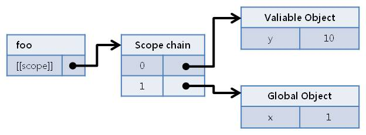
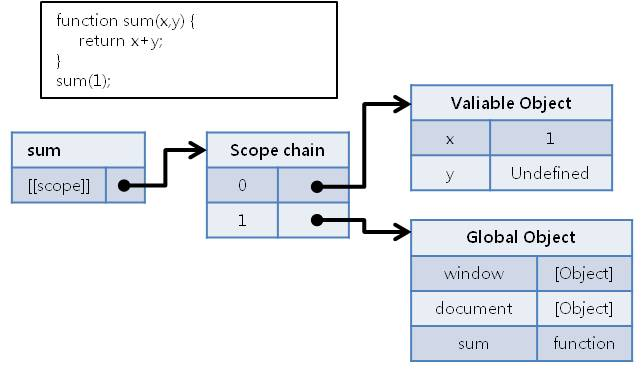
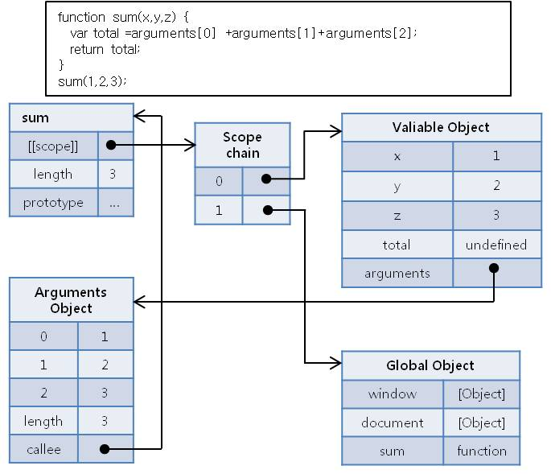

About Author

Insanehong
blog: http://insanehong.kr
twitter: @insanehong
github: insanehong.github.com
- NAVER Corporation, Front-End Engineer(2013~)
- Like Javascript, Dart, HTML5, CSS3,Responsive Web, Haroopress, Frends, Lean Startup, Open Source
- Hackrslab co-founder
- About me http://about.me/insanehong
About this Article
Date Released:
Thursday, August 16 2012 1:32 PMjavascript 기초 - Scope, Scope Chain & arguments
소개
이전글에서 소개한 function에 대한 글의 연속으로 이번글에서는 function 이 가진 여러가지 특성들에 대하여 알아보려고 한다. 이번 글에서 소개하는 function 의 특성은 Scope, Scope Chain 그리고 arguments 객체 이다. 이들은 Execution Context라는 개념에서 함수객체가 만들어지면서 생성되는 것들로서 이글 이후에 소개될 Execution Context에 대한 이해를 위해 필요로하는 녀석들이다. 그러므로 이번글에서 소개되는 내용을 통해 Scope, Scope Chain, arguments 에 대한 기본적인 이해에 도움이 되었으면 한다.
함수(function)의 특징
함수는 전역변수와 지역변수를 활용할 수 있다.
함수는 자신의
statement안에서 변수를 선언하여 지역변수로 사용할 수 있다.
이때 선언된 지역변수는 해당 함수안에서만 접근가능한 private variable 이 된다. 즉 함수 코드블럭을 벗어나게 되면 해당 변수는 메모리에서 사라지게 된다.
function foo() {
var x= 1; // 함수안에서 선언된 변수임에 지역변수이다.
return x;
}
console.log(foo());
> 1
console.log(x); // 외부에서 참조할수 없다.
>undefined
하지만 global 영역에 선언된 전역변수는 자바스크립트 코드 어디에서든 사용할 수 있기에 *함수안에서도 전역변수를 이용할 수 있다 *
var x= 1; // global 영역에 선언된 전역변수
function foo() {
return x; // 전역변수 x를 return
}
console.log(foo());
> 1
console.log(x); // 어디서든 참조가능한 전역변수
> 1
함수에서 전역변수와 지역변수사용함에 있어 재미있는 현상이 하나 있다. 바로 중첩된 이름의 변수 사용이다. 자바스크립트는 global 영역에 선언된 변수와 동일한 이름의 지역변수를 사용할수 있다. 이로 인해 디버깅 과정중에 많은 혼란을 초래하기도 한다.
var x='hello'; // 전역변수 x 에 hello 할당.
function foo() {
var x='world'; // 지역변수 x 에 world할당.
return x;
}
console.log(foo());
>world // 함수실행에 따라 지역변수 x에 할당된 world 가 출력된다.
console.log(x);
>hello // 전역변수 x에 할당된 hello 가 출력된다.
전역변수와 지역변수를 동일한 이름으로 사용했을경우 지역변수에서 다른 값을 할당하여도 전역변수에는 아무런 변화가 없다.
즉 전역변수와 지역변수를 동일한 이름으로 사용하여도 각각 다른 변수객체가 만들어진다는 것을 알수 있다. 이 현상에 대해 정확히 이해하기 위해서는 Scope 와 Scope Chain 이란 녀석들에 대해 이해하고 있어야 한다.
함수객체의 Scope & Scope Chain
Scope & Scope Chain
ECMA-262 3 Edition에서는 함수객체는[[scope]]라는 프로퍼티를 가지며[[scope]]는 함수객체가 생성되는 시점과 관련된 Object Reference 정보를 가지고 있으며 이 Object Reference 정보들을Scope Chain이라고 한다고 정의한다. 즉scope는 함수객체가 접근가능한Valiable Object의유효범위이며 이Valiable Object들의 집함을Scope Chain이라고 한다.
함수객체는 생성과정에서 함수구문 내에서 선언된 지역변수들을 Valiable Object 라는 객체에 저장한다. 그리고 전역객체(Global Object)의 Valiable Object 와 연결된다. 전역객체의 Valiable Object는 전역객체 자신이다. 이때 이 Valiable Object들에 대한 연결들을 Scope Chain 으로 관리하고 [[scope]]를 통해 Scope Chain을 참조하여 함수객체가 가지는 유효범위를 설정하게 되는 것이다.
var x = 1;
function foo() {
var y = 10;
return a+x;
}
console.log(z);
>ReferenceError;
위 예제코드의 foo() 함수객체가 생성될 때의 [[Scope]]와 Scope Chain 에 대한 연결은 아래 다이어그램을 보면 쉽게 이해할수 있다.

변수의 검색은 이 Scope Chain 에서만 탐색 된다. **Scope Chain의 하위에서부터 상위로 등록된 변수가 있는지 찾아가며 가장 처음 탐색되는 scope에 등록된 변수를 이용*한다. 즉 *Scope Chain 에의해 탐색되지 않는 변수는 undefined **이며 그런 이유로 예제의 console.log(z); 는 foo함수가 가진 유효범위에서 찾을 수 없는 변수 z 에 대한 접근을 하기 때문에 ReferenceError 가 되는 것이다. 처음의 의문으로 돌아가서 전역변수 x와 지역변수 x가 동일한 이름으로 사용이 가능한 이유는 이처럼 각각 x에 접근하기 위해 참조하는 Valiable Object가 다르기 때문인 것이다.
3. 변수선언에 사용되는 var 키워드
자바스크립트에서 변수선언은 반드시 var 키워드를 사용하여야 한다는 착각을 하고 있는 입문자들 여럿보았다. 하지만 이는 잘못된 생각이다. var 키워드의 사용은 해당 변수의 scope를 설정하는 역활만을 한다. var 키워드를 사용한 변수선언은 현재 Scope에 등록되며 var 없는 변수 선언은 Global Scopet에 등록되는 것이다. 이런 이유로 함수안에서 var 없는 변수를 사용하면 함수외부에서도 사용가능 하다.
x=1; //전역변수로 등록된다.
function sum() {
y=2; //전역변수로 등록된다.
var z = 3; //var 키워드 사용으로 현재 scope에 등록된다.
return x+y+z;
}
console.log(sum());
> 6
console.log(x+y);
> 3 //x,y 는 전역변수로 등록되기 때문에 정상 수행된다.
console.log(x+y+z);
> ReferenceError // z는 함수실행이 종료되면 메모리에서 비워진다.
위 예제를 보면 알수 있듯이 y 변수는 함수내부에 선언되었지만 var 없이 선언 되었기 때문에 전역객체에 등록되는 전역변수가 된다. var 를 사용한 z는 현재 스코프 즉 현재 실행되는 코드 블럭의 주인읜 객체의 Valiable Object 에 등록되기 때문에 함수가 호출되어 실행되고 있는 시점에서의 런타임 주체인 sum 함수의 Valiable Object에 등록되었다가 함수 실행이 종료되면 메모리에서 비워진다.
하지만 이런 코드패턴은 그다지 좋은 방법이 아니다. var 없는 변수는 전역객체에 등록이 됨으로 항시 메모리를 차지하고 있을뿐 아니라 변수에 값이 할당되는 것은 런타임에서 일어나는 일이기에 해당 변수는 함수객체가 생성되기 이전 즉 함수호출되기 이전에는 global scope 에 등록되지 않는다.
x=1;
function sum() {
y=2;
return x+y;
}
console.log(x+y);
> ReferenceError
또 한가지 var 없는 변수선언을 지양하는 이유는 복잡하고 길어진 코드내에서 var 없이 사용된 변수는 어디에서 어떻게 바뀌는지 추적하기 힘들기 때문이기도 하다. var 없이 선언된 변수는 함수내에서 수정된 값이 전역 scope에 직접적으로 영향을 끼치게 됨으로 본인도 모르는 사이 엄청난 버그를 양산해 낼수 있기 때문이다.
함수는 0개 이상의 매개변수(parameter)를 가질 수 있다.
매개변수(Parameter) 란?
매개변수란 함수호출시 함수객체로 넘겨질 인자값들을 담기 위해 함수명세에서 선언된 변수들을 뜻한다.
함수는 내부에서 선언된 지역변수와 global 영역에 선언된 전역변수를 사용하는 방법말고 변수를 활용하는 한가지 방법이 더 있다. 바로 함수호출시 인자로 전달받은 값을 저장할 변수를 미리 함수명세에 선언해 두는 것이다.
이런 매개변수는 ,(comma)를 기준으로 기분하여 선언하면 한개 이상의 매개변수도 사용할 수 있으며 해당 함수의 scope에 등록되어 함수내부 어디에서든 별다른 선언없이 함수호출시 넘어온 인자값을 할당받아 바로 사용할 수 있다.
function sum(x,y) {
return x+y;
}
console.log(sum(1,2));
> 3
console.log(sum(1,2,3));
> 3
console.log(sum(1));
> NaN
console.log(sum());
> undefined
위 예제에서 알수 있듯이 명세에 선언된 매개변수보다 많은 매개변수가 전달될 경우 넘어온 순서대로 매개변수로 할당하고 남은 인자값은 버려진다.
재미있는 사실은 넘어온 값이 매개변수보다 적을 경우에 실행 된다는 것이다. 흔히 함수호출시 선언된 매개변수에 대한 인자를 넘기지 않아 생기는 undefined 를 syntax error 라고 생각한다.
하지만 이는 함수객체 생성과정에서 매개변수로 선언된 변수를 Valiable Object에 추가하면서 기본적으로 undefined 를 할당하며 생긴 결과이지 syntax error 가 아니다.

이렇게 함수호출시 전달된 인자값들은 함수객체가 가진 arguments 객체에 저장된다.
arguments 객체
arguments 객체
자바스크립트의 모든 함수객체
scope는arguments라는 프로퍼티를 가지고 있다. 이arguments는 Function에 넘겨진 모든 인자에 대한 정보가 담겨 있는arguments Object라는 특별한 객체를 가리키고 있다.
정의에서 말했듯이 함수객체의 Valiable Object의 프로퍼티로 추가되는 arguments는 arguments Object를 가리킨다.
이 arguments Object 는 넘어온 인자의 순서에 따른 인덱스를 가진 유사배열객체이다. 유사배열객체라는 것은 매우 중요한 특성이다.
arguments Object에 저장된 인자값들에 대한 접근은 배열과 동일한 [] 를 사용하지만 **arguments Object는 Array Prototype Object를 상속하는 객체가 아니다.**그러므로 arguments Object 객체에는 push(), pop(), slice()등이 메소드를 가 존재하지 않는다.
function sum(x,y,z) {
var total =arguments[0] +arguments[1]+arguments[2];
return total;
}
console.log(sum(1,2,3));
> 6
위 코드의 scope에 대한 다이어그램을 보도록 하자

다이어그램에서 보면 알수 있듯 arguments Object는 넘어온 인자값을 저장하며** .length와 .callee 라는 프로퍼티를 가지고 있다.** .callee 프로퍼티는 현재 실행되고 있는 function 을 가리키는 프로퍼티 이다. sum() 함수객체의 .length 프로퍼티와 arguments 객체가 가진 .length 프로퍼티는 서로 다른 의미를 갖는다. 함수객체의 .length 는 함수명세에 선언된 매개변수의 수를 arguments 의 .length는 함수호출시 넘어온 인자값의 수를 나타내는 프로퍼티들이다. 함수객체와 arguments 객체가 가진 .length 프로퍼티를 이용하면 함수명세에 선언된 매개변수와 동일한 수의 인자값이 넘어왔는지 체크할수 있다.
function checkParameter(x,y,z) {
if(arguments.length == arguments.callee.length) return true;
else return false;
}
console.log(checkParameter(1,2,3));
> true
console.log(checkParameter(1,2));
> false
arguments를 이용하려면 반드시 주의해야하는 사항이 있다. arguments는 함수객체 생성과정에서 만들어지지만 *arguments라는 이름의 변수를 지역변수를 선언하여 사용하면 arguments는 만들어지지 않는다. *
*.callee 라는 프로퍼티는 현재 호출된 function을 가리키는 참조프로퍼티다. 이 프로퍼티는 이름없는 함수에서 재귀를 구현할때 사용하면 참초되는 이름이 없더라도 함수내에서 자기 자신을 재귀호출 할수 있다. *
var total=0;
(function (x) {
if(x>=0) {
total+=x;
x--;
arguments.callee(x);
}
})(10);
console.log(total);
> 55
갈무리
이번글에서 알아본 내용들은 후에 있을 Closure와 Execution Context 에 대한 설명에서 나오는 용어들의 풀이정도라고 생각하면 될것이다.
즉 이번 글에서 해당 용어들에 대한 정의를 제대로 이해하지 못한다면 앞으로 연재될 글을 제대로 이해하지 못할수도 있다. 그럼 언제나 똑같은 멘트이지만 이글을 통해서도 해당 내용들에 대하여 자세히 이해할 수 없다면 당연히 다른 레퍼런스를 참조해서 이들에 대한 정확한 이해를 해야할것이다.
이는 비단 다음연재될 글들뿐만이 아닌 자바스크립트 Core 에 대한 이해에 필수적인 내용이기 때문에 반드시 이해하고 있길 바란다.
by Insanehong